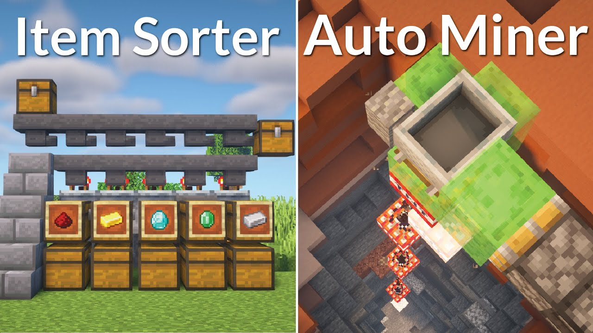

Exploration and Building
Minecraft is renowned for its vast open world and limitless creative potential. Players can explore diverse biomes, mine resources, and build intricate structures using various blocks and materials. As previously mentioned, one can add their own mods to Minecraft for better performances, change in game mechanics and much more. Resource Packs are also a great way to explore. Resource Packs are data packs that change the way your game looks. You can make your world pixelated, like Mario for example, or make it as realistic as the real world with mods like ClearWater. Just make sure your PC can handle the power!
Creative Mode
In Creative mode, players have unlimited resources and can fly, enabling them to build freely without constraints. This mode is ideal for creative projects and building impressive landscapes and structures. I spent a lot of time in creative building things that I later build in my survival world. Having unlimmited resources allows me to outline my builds and create a list of materials needed. But, Creative mode is not only for builders. For example, if you like to blow things up, grab some TNT!

Redstone Mechanics
Minecraft features a unique redstone system that allows players to create complex circuits, mechanisms, and automated devices. This feature adds depth to gameplay and fosters engineering and problem-solving skills. Despite playing Minecraft for over 10 years, I am still not smart enough to create a redstone build. Sad.
